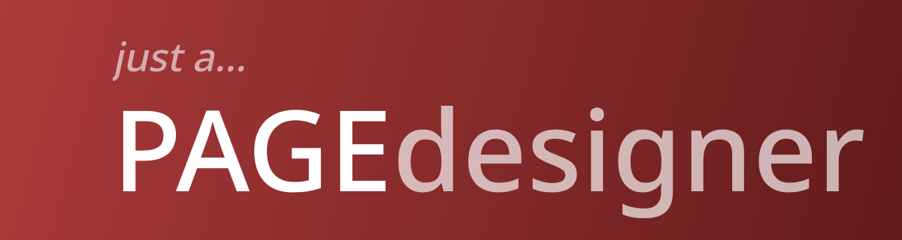
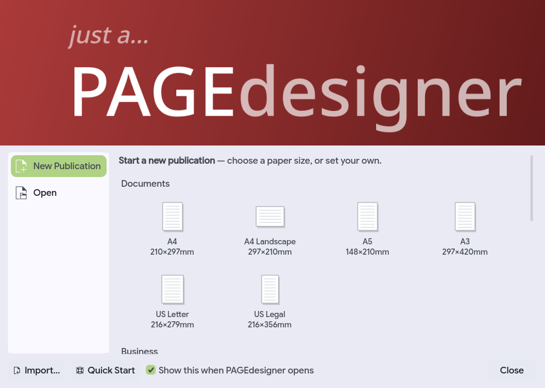
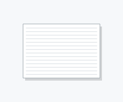
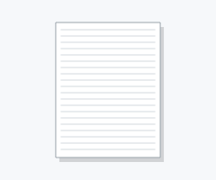
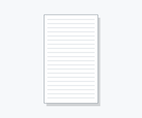
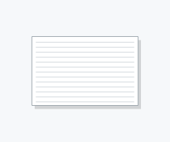
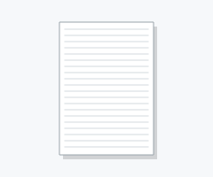
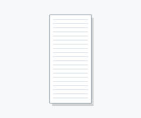
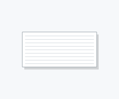
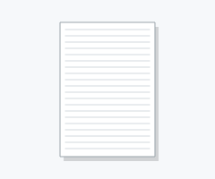

just a… PAGEdesigner

A ground-up recreation in the spirit of Serif’s PagePlus — the same menus, in the same places.
Design print documents page by page — text frames that flow between columns, master pages, guides and page numbers — then export a vector PDF.
A closer look


Start from the right size · 18
Every paper size the Startup Assistant offers — A-sizes, business stationery, booklets and large-format posters. Each thumbnail is drawn to the sheet's real proportions. Pick one and start laying out.
Nothing matches that.











What it does
- Linked text frames (newspaper-style text flow), booklet view
- Master pages, guides, columns, page numbers
- QuickShapes, effects, drop cap, spell check, tables
- Calendar wizard and CSV mail merge
- Edit pictures in PAINTcanvas; opens Serif PagePlus files
- Vector PDF export with bleed & crop marks
Install PAGEdesigner
Install the dependencies for your distribution, then clone and run the installer. Nothing needs root except the dependency line.
Arch / CachyOS / Manjaro:
sudo pacman -S --needed pyside6 python-beautifulsoup4Then, on any distribution:
git clone https://github.com/janszafranski/just-a-collection-of-apps.git
just-a-collection-of-apps/apps/pagecreator/install.shOnly PySide6 is strictly required — use your distribution's package,
not pip, so the app follows your desktop theme. The installer checks the rest and tells you
what, if anything, is missing. There is an uninstall.sh beside it.